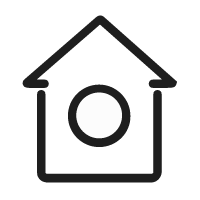

<div class="container-fluid d-flex flex-row justify-content-start board">
    <div class="d-flex flex-column align-items-center justify-content-start panel">
        <div class="d-flex flex-row justify-content-around align-items-center panel-subject">
            
            <div>首页</div>
        </div>
        <div class="d-flex flex-row justify-content-around align-items-center panel-subject">
            
            <div>功能</div>
        </div>
        <div class="panel-subject panel-item">自定义菜单</div>
    </div>
    <router-outlet></router-outlet>

</div>

